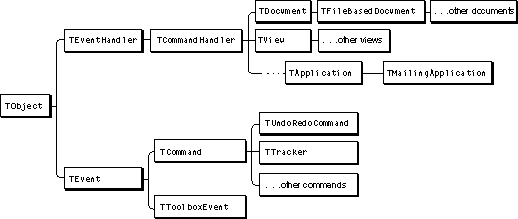

Overview
The central activity of a MacApp application is responding to events. For example, when a user types Command-N (equivalent to choosing the New command from the File menu), the application receives a key-down event from the Macintosh Operating System. The application examines the key-down event, determines that the Command key was pressed, and finds there is a menu command choice that corresponds to Command-N. The application responds to the menu choice by creating a command object that in turn creates a new document.Other events are not generated by direct manipulation of the application. For example, an application may receive Apple events from a script or from the operating system. MacApp provides an important service by dispatching all types of events in a predictable and reliable manner. It also provides a mechanism to process the command objects your application creates to respond to events.
This chapter provides a detailed description of MacApp's mechanism for processing events and commands. While most developers won't need to modify the basic mechanism, the information in this chapter will be useful for those who do. For others, it will make it easier to understand and build on MacApp's foundation.
Events and Commands
A MacApp application has a single application object. The application object periodically retrieves events from the operating system and dispatches them to objects that can handle them. Figure 1-4 on page 13 shows a simplified version of this process.An object in a MacApp application typically responds to an event by performing an operation or by creating a command object to perform an operation. Command objects are posted to the application's command queue, which is described in the next section.
MacApp provides the
TEventclass and its subclasses to represent events. One subclass,TToolBoxEvent, encapsulates the information from a Macintosh Toolbox event. These classes are shown in Figure 5-1.Another subclass of
TEvent, theTCommandclass, serves as the superclass for MacApp's command classes. TheTCommandclass provides fields and methods for doing, undoing, and redoing a command operation (see "Performing Operations With Command Objects," beginning on page 117).Figure 5-1 Event, command, and command-handling classes in MacApp

The Command Queue
A MacApp application object maintains a queue for storing commands. When an object in your application posts a command to perform an operation, MacApp inserts the command into the command queue. Commands are processed on a first-in, first-out basis. Most commands are processed only once, so by default a command is nonrecurring--itsfRecurringfield is initialized toFALSE. After performing a command, the application deletes it from the command queue, unless it is a recurring command--itsfRecurringfield has been set toTRUE.
- Note
- For historical reasons, the
TApplicationfield used to store commands is calledfEventList.The Main Event Loop
The application object'sMainEventLoopmethod periodically retrieves an event from the operating system or a command from the command queue. Several methods of the application object work together to retrieve and process events and commands. There are two key points to keep in mind about MacApp's main event loop processing:
- The application object retrieves events from the operating system in a timely manner and dispatches them by calling methods of the objects in your application.
- The application object also retrieves and executes command objects posted by your application.
Event- and Command-Handling Classes
To dispatch an event or perform a command, MacApp calls methods defined in three base classes in its class library. Your objects that respond to events and commands generally descend from these classes:MacApp classes
TEventHandler- The
TEventHandlerclass defines a number of fields and methods for responding to events.TCommandHandler- The
TCommandHandlerclass is a subclass ofTEventHandler. It adds support for responding to an event with a command object. Command objects perform operations that can be done, undone, and redone.TBehavior- The
TBehaviorclass is designed to modify the behavior of an event-handling class (subclasses of eitherTEventHandlerorTCommandHandler). Behaviors are described in the next section.TApplication,TDocument,TView, andTWindow(a subclass ofTView) all descend fromTCommandHandler. When you define a subclass of one of these classes, your subclass is capable of handling both events and commands. Figure 5-1 shows the class hierarchy for MacApp's important command-handling classes.
- Note
- You rarely define a direct subclass of the
TEventHandlerclass--more often you define a subclass ofTCommandHandleror one of its subclasses.Behaviors
MacApp supplies theTBehaviorclass to provide a mechanism for altering the behavior of event-handler objects (objects based onTEventHandleror one of its subclasses). A behavior class serves as a filter that can intercept selected method calls and perform an action. You create a behavior object and attach it to an event-handler object, which becomes its owner. Each behavior can point to another behavior, allowing you to form a linked list of behaviors attached to an event-handler object. Each behavior can be enabled or disabled.A behavior object is able to modify the actions of an event handler because its methods are called before the corresponding methods of its owner. "Behaviors and the Target Chain," beginning on page 107, describes how MacApp dispatches events to objects with attached behaviors.
Behavior classes usually have fewer fields and methods than event-handling classes, so they tend to be small, simple, and efficient. MacApp itself uses behavior classes to help support a number of application services, including Clipboard management, drag-and-drop support, dialog-box support, print handling, and tabbing between views.
The
TBehaviorclass contains methods that provide a broad range of options for modifying the behavior of an event-handling class:You can read more about
- Behavior management. The
TBehaviorclass has methods that manage the behaviors attached to an event-handler object, including methods to add a behavior, remove a behavior, get the next behavior or the next enabled behavior, and insert a behavior before or after a particular behavior.- Event filtering. The
TBehaviorclass has many methods that modify the operation of the event-handler object the behavior is attached to, includingDoCommandKeyEvent,DoEvent,DoKeyEvent,DoKeyUp,DoMenuCommand,DoMouseCommand,DoMouseUp,DoScriptCommand,DoSetCursor,DoSetupMenus,Draw, andDoToolboxEvent.- Idling. The
TBehaviorclass has methods that set the idle frequency, check idle timing, and perform idle-time operations.- Stream support. As a descendant of the
TObjectclass, theTBehaviorclass has methods that read data from a stream or write data to a stream.TBehaviorand its subclasses in the MacApp Class and Method Reference.